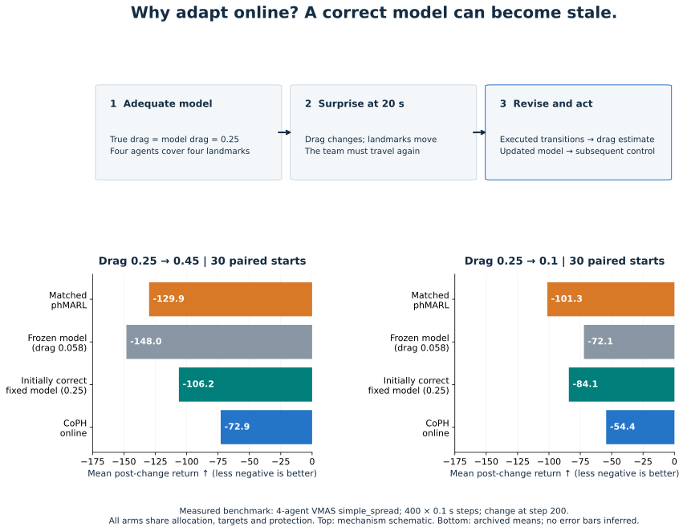
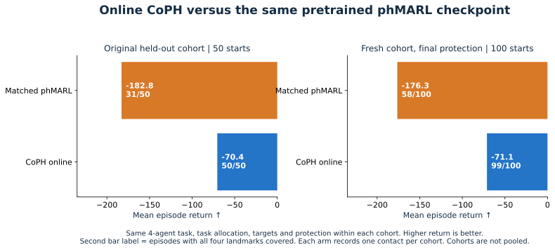
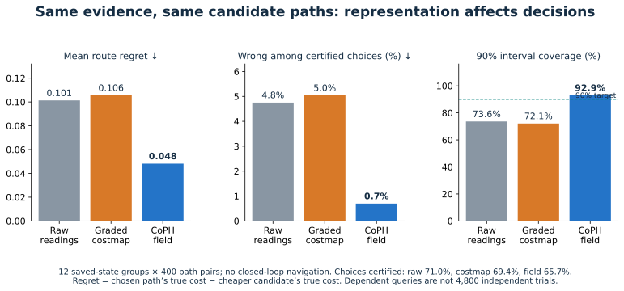
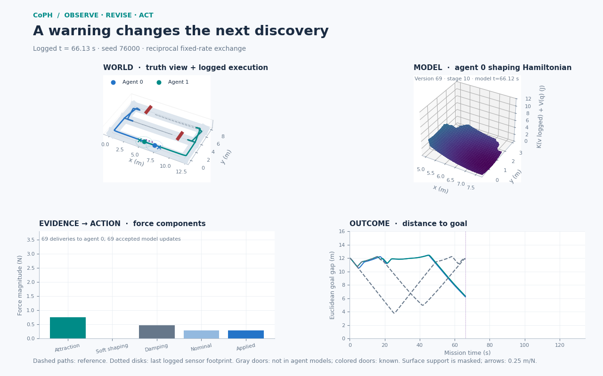

TASK · BASELINE · METRIC · RESULT
Where CoPH helps.
Each comparison below states the task, shared conditions, metric and baseline. Blue rows identify the best measured result for the stated primary metric; ties are retained. Separate studies are not pooled. DistGP and exposure-planning comparisons remain unrun.
1. Unexpected dynamics: when online identification is needed
Task: four agents cover four landmarks in VMAS simple_spread. At 20 s, drag changes from 0.25 and the landmarks move. Each direction uses 30 paired starts. All arms share assignment, target selection and protection. Return is the sum of task rewards; higher (less negative) is better. Only the post-change phase is compared below.

An initially correct model performs better before the intervention, but becomes stale afterward. Online CoPH gains +33.3 return [30.6, 36.0] after the drag increase and +29.7 [24.8, 34.8] after the decrease, relative to that fixed model. Brackets are archived paired 95% intervals; bars show means.Drag 0.25 → 0.45
| Controller / model | Post-change return ↑ | All landmarks covered ↑ | New contact onsets ↓ |
|---|
| Matched phMARL | -129.9 | 12/30 | 2 |
| Frozen model (drag 0.058) | -148.0 | 28/30 | 1 |
| Initially correct fixed model (0.25) | -106.2 | 30/30 | 2 |
| CoPH online | -72.9 | 30/30 | 1 |
Drag 0.25 → 0.1
| Controller / model | Post-change return ↑ | All landmarks covered ↑ | New contact onsets ↓ |
|---|
| Matched phMARL | -101.3 | 14/30 | 2 |
| Frozen model (drag 0.058) | -72.1 | 30/30 | 1 |
| Initially correct fixed model (0.25) | -84.1 | 30/30 | 7 |
| CoPH online | -54.4 | 30/30 | 1 |
Takeaway. Online adaptation beats every tested fixed model in post-change return in both directions. This supports dynamics adaptation on this task; it does not establish a communication or replay benefit.
2. Native task: comparison with matched phMARL
Task: the same four-agent landmark coverage benchmark. The external baseline is one published pretrained phMARL checkpoint, given the same allocation, static targets and protection as CoPH. These are two separate held-out cohorts.

Absolute mean returns and full-coverage counts for matched phMARL and online CoPH. The 50-start return gain is +112.4 [102.4, 122.8]; the 100-start gain is +105.3 [97.9, 112.6]. These are paired archived 95% intervals, not bar error estimates.| Cohort | Controller | Mean return ↑ | Full coverage ↑ | New contacts ↓ |
|---|
| 50 starts | Matched phMARL | -182.8 | 31/50 | 1 |
| 50 starts | CoPH online | -70.4 | 50/50 | 1 |
| 100 starts | Matched phMARL | -176.3 | 58/100 | 1 |
| 100 starts | CoPH online | -71.1 | 99/100 | 1 |
Takeaway. CoPH improves coverage and return against this matched checkpoint. The comparison does not establish superiority over all phMARL training runs, tasks or MARL methods.
3. Sparse evidence: field versus raw readings and costmap
Task: choose the lower-cost candidate path from identical sparse evidence. Twelve saved-state groups contain 400 path pairs each. All representations score the same candidates. A choice is certified when it agrees across 95% of samples from that representation’s stated uncertainty.

The field reduces mean regret and has better empirical interval coverage, while certifying fewer choices. Nominal 90% coverage is a calibration target, not a quantity to maximize without limit. These are saved-state decisions, not navigation episodes.| Representation | Mean regret ↓ | Correct choice ↑ | Choices certified | Wrong among certified ↓ | 90% interval coverage (target 90%) |
|---|
| Raw readings | 0.101 | 88.1% | 71.0% | 4.8% | 73.6% |
| Graded costmap | 0.106 | 88.0% | 69.4% | 5.0% | 72.1% |
| CoPH field | 0.048 | 91.9% | 65.7% | 0.7% | 92.9% |
Takeaway. The field has lower regret in all 12 groups; the absolute advantage is small (about 1% of path cost). DistGP was not evaluated in this comparison.
4. Different preferences: what should a scout send?
Original four-scene pilot: a risk-tolerant scout (weight 0.25) precedes a risk-averse carrier (weight 6) by 25 s. Hazards are traversable. All 64 agent missions complete without collisions. Cost is travel time plus receiver-weighted risk. Worst-case excess is relative to the best tested arm in each scene; lower is better.
 Different objectives make a sender’s binary advice insufficient. Graded field summaries let the carrier price the same hazard using its own risk weight. Raw readings achieve the same result in this pilot; the figure does not claim a field advantage over raw evidence.
Different objectives make a sender’s binary advice insufficient. Graded field summaries let the carrier price the same hazard using its own risk weight. Raw readings achieve the same result in this pilot; the figure does not claim a field advantage over raw evidence.| Shared information | Worst-case carrier excess cost ↓ | Interpretation |
|---|
| Learned field | 4.6 | Graded evidence; carrier applies its own risk preference |
| Raw readings | 4.6 | Matches learned-field navigation |
| Field, receiver fitting disabled | 4.6 | Shows the benefit does not require receiver reconstruction here |
| Scout’s avoid/free decision | 25.3 | Applies the scout’s preference before transmission |
| No communication | 68.1 | Carrier learns through its own visit |
Takeaway. Graded evidence beats the tested binary advice and no communication. The learned field ties raw readings, and receiver fitting adds no navigation benefit in this pilot. This table is not evidence of universal field superiority.
5. Reciprocal discovery: one warning changes the next discovery
Displayed case: two independent agents traverse a surveyed network with hidden closures. Compare reciprocal exchange with no communication on the same controlled layout. Geometry warnings may change route and discovery order. The animation uses seed 76000.

A logged frame from the controlled crossing: solid and dashed trajectories show reciprocal exchange and no communication. Model surfaces and packet events come from recorded states; the image is an example, not an aggregate performance plot.In this layout, reciprocal exchange saves 27.1 m of team detour. Absolute baseline detour totals are not included in the compact presentation summary, so this section makes no broader aggregate comparison.
Takeaway. Reciprocal discovery can reduce wasted travel in a controlled layout. The benefit depends on topology and message timing; this is not a result against an external planning baseline.
6. Symmetric conflicts: execution-layer liveness
Task: four agents swap goals through a shared center. Compare the old and final protection layers, holding the controller fixed. The final layer includes deterministic priority; it is programmed rather than learned. Thirty starts are tested per encounter family.
| Four-agent swap | Completed ↑ | What changes |
|---|
| CoPH + old layer | 0/30 | Symmetric conflict can persist |
| CoPH + final layer | 30/30 | Priority resolves the conflict |
Across the tested families, the final layer completes 30/30 starts per family for both CoPH and the attraction controller, with zero contacts. Thus this liveness gain belongs to the shared execution mechanism. Priority adds delay: median crossing steps are 140 versus 81 in the reported comparison.
Takeaway. The final layer resolves these tested conflicts; it is not evidence that CoPH learned a yielding strategy or outperformed attraction control on liveness.
Full signal and adverse-record inventory